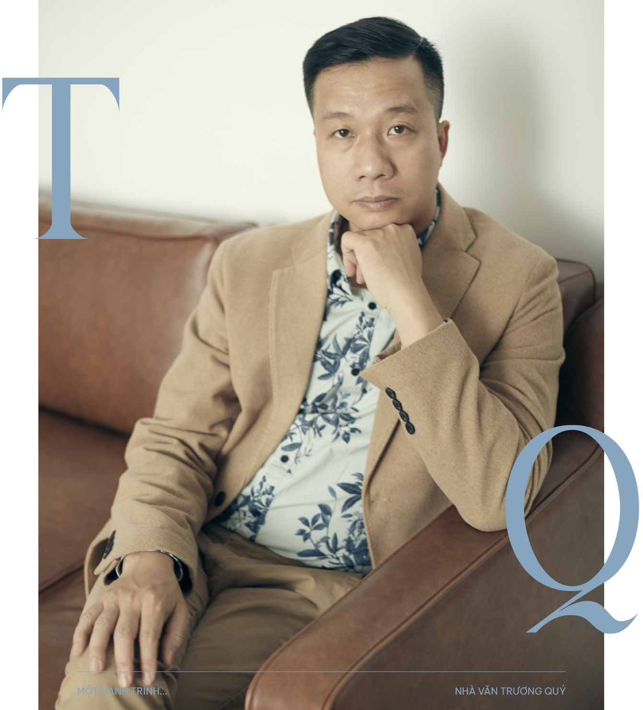
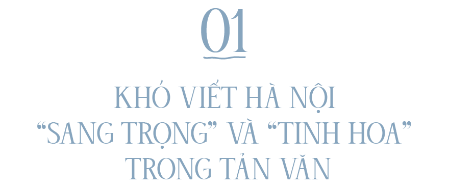
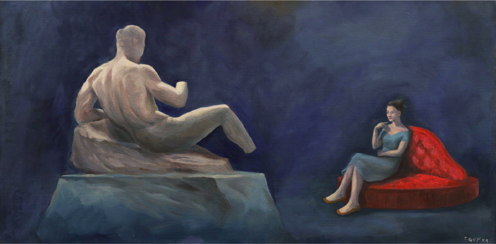
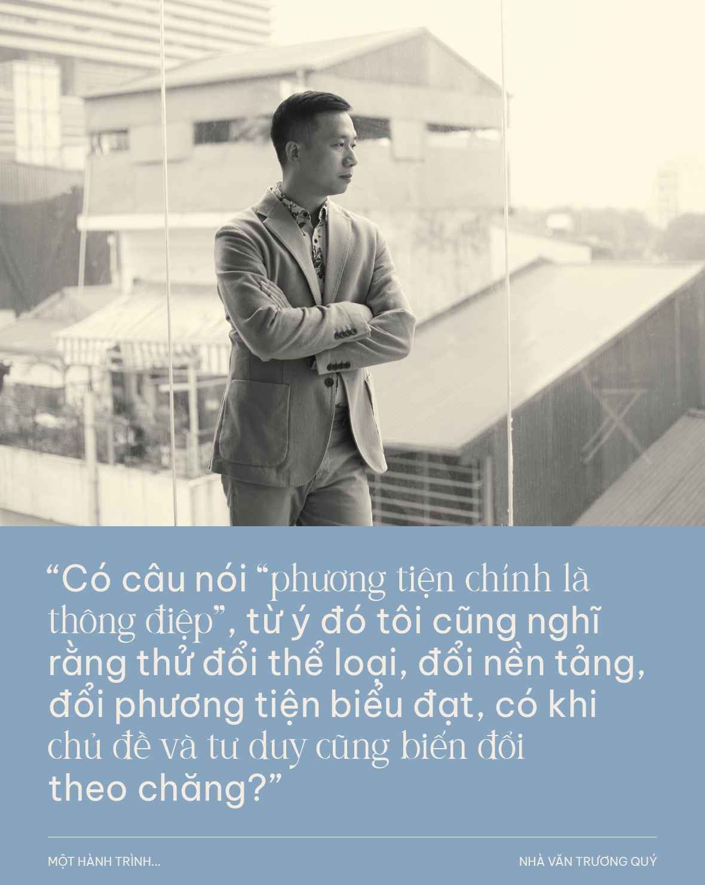
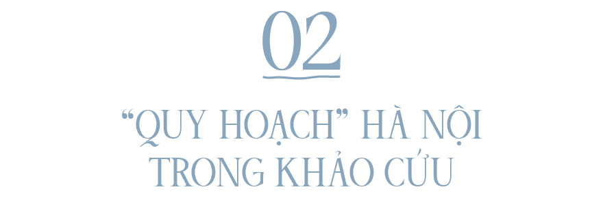
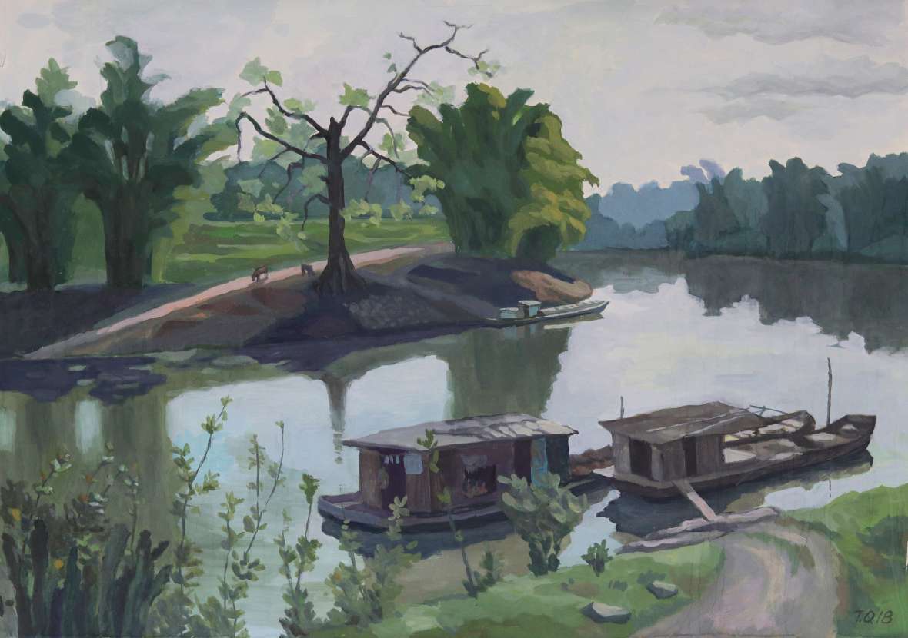
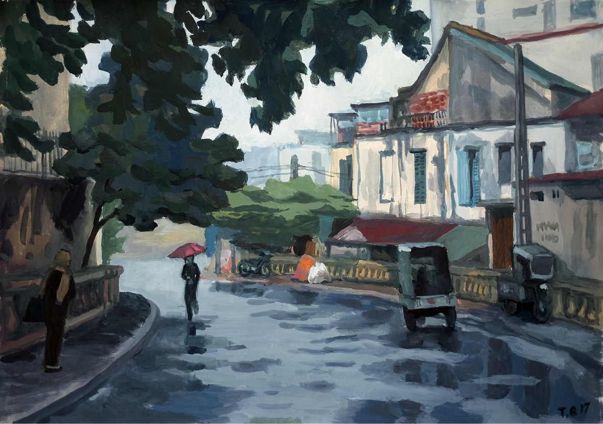
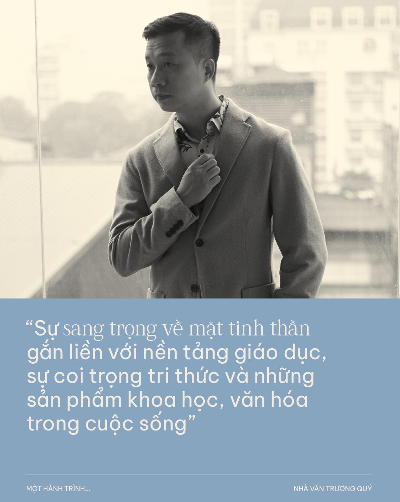
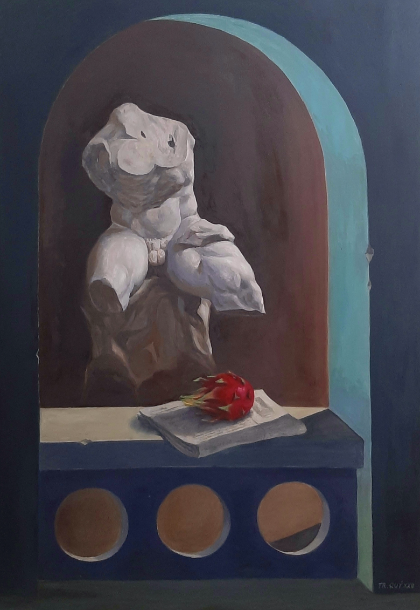

“Một hành trình…” là cuộc trò chuyện giữa Thụy Phương với các văn nghệ sỹ nhằm kể lại cho độc giả một hành trình đời, sống và sáng tác, mà họ đã đi qua. Chặng đường đó đã giúp họ định vị vững vàng trong lĩnh vực của mình (văn chương, hội họa, nghệ thuật, nghiên cứu, v.v.). Những gì họ đang làm trong hiện tại và dự định cho tương lai sẽ giúp chúng ta hiểu sự tìm tòi và làm mới bản thân, cũng như đóng góp của những nghệ sỹ và trí thức này trong lĩnh vực mà họ là chuyên gia và một cách gián tiếp đóng góp của họ cho xã hội. Qua những bức chân dung này, hi vọng giúp độc giả hiểu hơn về bản sắc cá nhân của họ (tâm tư, băn khoăn, cảm xúc) bên ngoài trang giấy, sàn diễn hay giá vẽ.
“Tự nhiên như người Hà Nội" (2004), "Mỗi góc phố một người đang sống" (2015), hay “Một thời Hà Nội hát – Tim cũng không ngờ làm nên lời ca” (2018), v.v. là những tựa sách gắn liền với tên tuổi của nhà văn Nguyễn Trương Quý. Sinh năm 1977 tại Hà Nội, Trương Quý tốt nghiệp cử nhân ngành Kiến trúc và thạc sỹ Quản lý Truyền thông, hiện là nhà văn và họa sỹ tự do. Anh là tác giả được trao giải "Bùi Xuân Phái - Vì tình yêu Hà Nội". Hai thập niên qua, Trương Quý vẫn cứ mải miết lang thang qua những phố phường Hà Nội, và có lẽ anh sẽ tiếp tục rong ruổi như thế, tiếp tục viết và vẽ về Hà Nội.
Khởi đầu của những ngày cầm bút, Hà Nội – với tư cách là một nhân vật, đã đến với anh như thế nào? Vì sao, sau hơn chục cuốn sách, gần 20 năm cầm bút, Hà Nội vẫn ở lại với anh?
Ban đầu, Hà Nội trong khung cảnh viết của tôi phản chiếu hai thế giới: Một Hà Nội của sách vở (các trang sử ký tôi đọc hay những khảo cứu về các công trình kiến trúc tôi học), và một Hà Nội của đời sống phố phường nơi tôi sinh ra, lớn lên và va chạm hàng ngày. Điều đó thể hiện chính xác hình ảnh Hà Nội trong tôi, vừa chịu ảnh hưởng của tàng thư, vừa là những quan sát cảm nhận từ trải nghiệm của chính mình.
Có lẽ vì thời gian đi xa khỏi Hà Nội không nhiều so với thời gian sống ở đây, nên tự nhiên đô thị này vẫn là đề tài chi phối việc viết của tôi. Nhưng điều chủ yếu là tôi luôn tự thấy mình mới chỉ lật ra vài đường cày trên mảnh đất đề tài này, cứ đi được mảng này lại thấy những mảng khác cần cày tiếp. Đôi khi cũng như một sự nợ nần vô hình.
“Hà Nội bảo thế là thường" (2020) | “Một thời Hà Nội hát – Tim cũng không ngờ làm nên lời ca” (2018)
“Thời thanh xuân của tân nhạc ái quốc” (2022) | "Triệu dấu chân qua những cửa ô" (2022)
Dưới ngòi bút của anh, Hà Nội biến thiên qua một thế kỷ nay. Cái tinh hoa của một Hà Nội đô thị hiện đại ngày nay trong mắt anh như thế nào?
Tôi rất muốn đổi từ “tinh hoa” bằng một từ nào đó đỡ cấn cái hơn, nhưng quả thực mỗi đô thị cần duy trì một thứ gọi là hồn cốt của nó về văn hóa, phong tục, để làm nên vẻ hấp dẫn riêng, hoặc chí ít thực dụng là để cạnh tranh với những nơi chốn khác. Ở phương diện đó, Hà Nội hiện đại vẫn thừa hưởng di sản của quá khứ, cả quá khứ gần lẫn xa. Nghĩ mà xem, xưa nay người ta vẫn đánh giá cao cái cốt lõi là đất văn vật, nơi tụ hội hiền tài khắp nơi và là đất dụng võ của nhiều lứa người về đây tìm cách phát triển năng lực bản thân. Tuy nhiên điều quan trọng là Hà Nội phải chứng minh được vai trò là trọng tài công minh cho sự xếp hạng tài năng đó. Quá khứ đã từng hiện diện như vậy, còn ngày nay, Hà Nội đang có những sự tìm kiếm lại vị thế đó.
Vậy theo anh, Hà Nội đang tìm kiếm lại vị thế này như thế nào? Người Hà Nội góp phần cho sự tìm kiếm này ra sao?
Nếu nhìn ở góc độ những chính sách hay thông điệp của giới quản lý, có vẻ lâu nay sự tìm kiếm vẫn cứ đang loay hoay. Nhiều cuộc hội thảo hay các chương trình chấn hưng văn hóa của một Hà Nội được đề ra, nhưng sự thực hiện hơi chật vật. Nhưng ở góc độ cộng đồng, tôi nghĩ có một sức ép tạo ra giá trị thật sự, đo đếm được. Sự cầu tiến, khao khát những giá trị cao sang rất cụ thể, từ việc cần những ngôi trường tốt nhất đến những nhà hàng có chất lượng hoàn hảo nhất, xét cho cùng là một loại động lực tạo ra giá trị cho vị thế của đô thị.
Nguyễn Trương Quý, "Đối thoại" (2020)
Có điểm gì làm nên sự sang trọng của Hà Nội ngày nay? Và sự sang trọng ở đây khác với Thành phố Hồ Chí Minh như thế nào?
Sự sang trọng cũng là một ý niệm khá lấn cấn để bàn ở Hà Nội bây giờ. Sang trọng thường gắn với điều kiện vật chất và thật sự nói như một câu thành ngữ đã bị dùng với hàm ý tiêu cực: “Phú quý sinh lễ nghĩa”. Tuy nhiên, có lẽ điều chúng ta muốn bàn luận là sự sang trọng cả về mặt đời sống tinh thần, và đấy cũng mới là điều đáng bàn. Sự sang trọng về mặt tinh thần gắn liền với nền tảng giáo dục, sự coi trọng tri thức và những sản phẩm khoa học, văn hóa trong cuộc sống.
Bạn hỏi về sự sang trọng quả thực có khiến tôi giật mình. Lần cuối cùng mình khen thành thực một nơi chốn hay phong cách của ai đó là sang trọng mà không hàm nghĩa bóng gió là khi nào nhỉ? Trong đời sống thường nhật, ở Hà Nội người ta vẫn khen món đồ trông rất sang hoặc cốt cách trang nhã, hoặc như một từ của thời Tây mà tôi cho là thích hợp để dùng là có“gu”. Ăn mặc có gu đã đành, chơi cũng phải có gu và tất nhiên, đọc có gu, là một vài điều khá quan trọng để người ta đánh giá khả năng kết bạn thân sơ.
Sự sang trọng của một nơi chốn phải xét đến cả khung cảnh lẫn hoạt động của con người. Ở Hà Nội, một vài khu phố có cơ sở hạ tầng tốt hài hòa với những công trình di sản được bảo tồn, những không gian văn hóa có sự đầu tư chăm chút, những không gian tri thức được tôn trọng, có lẽ đấy là những điều kiện cần cho sự sang trọng chăng? Còn điều kiện đủ, đương nhiên là những nơi đó phải diễn ra những hoạt động gắn với tôn vinh chân thiện mỹ, những gì tạo ra đỉnh cao của một nền văn minh.
Có lẽ sự sang trọng của đời sống tại Thành phố Hồ Chí Minh có những nét khác do môi trường sinh hoạt, các không gian dạng cao cấp có sự hợp khối và liên thông, lại thường xuyên diễn ra các hoạt động dịch vụ đáp ứng nhu cầu của các tầng lớp doanh nhân, giới biểu diễn trong nước lẫn quốc tế. Hà Nội ở một góc độ nào đó vẫn gắn sự sang trọng với yếu tố quyền lực chính trị, cho dù vị thế giới doanh nhân đã làm cho không gian “xa hoa” rực rỡ hơn trước rất nhiều. Câu chuyện “chơi sang” cũng là điều rất đáng nói, trước đây có thời bị dán nhãn không tốt, giờ thì ta thấy rõ đó là một thành tố vô cùng quan trọng để làm nên sự sang trọng của đời sống đô thị.
Còn góc cạnh hay khuôn mặt nào của Hà Nội mà anh vẫn muốn tiếp tục khai thác trong thể loại tản văn không?
Đương nhiên còn rất nhiều góc cạnh của đời sống Hà Nội để mà viết về chứ. Ngay câu chuyện “chơi sang” đang nói cũng đầy sự bí ẩn và quyến rũ cho người viết. Thế nào là sang và thế nào là đẹp, hay sự sang và đẹp có luôn trùng khít nhau không, muôn hình vạn trạng cần được giải mã. Để nói về sự chịu thương chịu khó, cái bình dị của đời sống chính ra dễ, chứ nói về sự sang trọng lại vô cùng khó, bởi lẽ người viết cũng đâu có giàu hoặc dám nhận mình là sang trọng. Tất nhiên cũng đã có những người như Nguyễn Tuân được tiếng là biết chơi và chơi ngông, nhưng có lẽ ý niệm về sự sang trọng thời của ông với thời nay khác nhau. Sự sang trọng vẫn là một thứ có sức hút đối với công chúng, một cách vô hình thì nó tạo ra một thách thức với người viết. Nguyễn Khải cũng từng tìm cách viết về giới thượng lưu Sài Gòn hay những người Hà Nội tinh hoa cũ, và để lại những tác phẩm đặc sắc như “Gặp gỡ cuối năm”, “Một người Hà Nội”.
Nhìn rộng ra văn chương thế giới, những cuốn như “Gatsby vĩ đại” (The Great Gatsby) của F. Scott Fitzgerald cũng trực tiếp viết về sự sang trọng ở khía cạnh phù vân của nó. Sự sang trọng ở mức độ nhất định, cũng là một chỉ dấu của mỹ cảm đời sống, có những sự thăng hoa và rực rỡ của sáng tạo. Những tác phẩm nghệ thuật đỉnh cao của nhân loại vẫn được gắn với những khung cảnh sang trọng của các lâu đài, thánh đường hay bảo tàng.
Anh đã định hình vững vàng trong thể loại tản văn. Với tư cách là người nghiên cứu sử, tôi nhận ra trong chừng 10 cuốn tản văn đó những tìm kiếm lịch sử trong những lý giải văn hóa, văn học của anh. Hai cuốn “Thời thanh xuân của tân nhạc ái quốc” (2022) và “Một thời Hà Nội hát” (2018) được viết ở thể loại khảo cứu lịch sử văn hóa (cultural history). Hành trình từ tản văn đến khảo cứu, anh đã đi như thế nào?
Khi viết những bài tản văn đầu tiên, tôi đã có mong muốn tìm hiểu những câu chuyện có gốc gác từ lâu ở Hà Nội, thực tế hướng ấy cũng không có gì khác thường cả, bởi lẽ bối cảnh văn hóa là một ý niệm diễn ra trong một quá trình dài lâu. Muốn làm được những điều đó thì dĩ nhiên phải quan tâm đến khảo cứu lịch sử. Hà Nội hay xã hội Việt Nam nói chung đều hàm chứa nhiều dữ kiện quá khứ luôn cần được phục dựng dưới những ánh sáng mới. Bản chất câu chuyện lịch sử văn hóa có những sự kích thích của các thao tác làm việc liên văn bản và liên ngành, điều đó khá hấp dẫn tôi, vốn dĩ đã hơi đi “lung tung” qua nhiều lĩnh vực. Sau khi đã in vài cuốn tản văn, tiểu luận, tôi nhận ra rằng đã đến lúc quy hoạch những đề tài như vậy ở một thể tài dài hơn, sâu hơn.
Nguyễn Trương Quý, "Bến đò Mom – sông Thương" (2018)
Vì sao anh chuyển hướng viết từ tản văn đến khảo cứu như vậy? Một nhu cầu nội tại?
Như trên tôi đã nói, viết khảo cứu cũng là một bước cần thiết để đẩy sâu hơn những ghi chép, suy tư thành mức độ gần với nghiên cứu khoa học hơn. Đó cũng là một nhu cầu tự tìm cách đào tạo chính mình nữa. Với những bài tản văn, đầu ra của chúng ban đầu thường là đăng báo, tạp chí, với độ dài chỉ từ 2000 – 3000 từ (đã là loại dài nhất có thể đăng rồi), tôi thấy độ dài đó chỉ đủ để giải quyết một vài góc độ đơn lẻ. Thêm vào đó, đối tượng độc giả của tản văn phổ thông hơn, cũng như khó mà đặt ra yêu cầu giải quyết ngọn ngành một vấn đề có tính quy mô, một giai đoạn lịch sử chẳng hạn.
Bản thân tôi cũng rất ấn tượng với một số cuốn khảo cứu về Việt Nam của học giả nước ngoài đã xuất bản, hóa ra chúng không hề khô khan hoặc khó đọc, mà thực sự họ có những kiến giải rất thú vị cùng văn phong sáng rõ, hấp dẫn. Có người bạn bảo tôi, vậy tại sao không viết cuốn sách của chính mình, một người Việt, về câu chuyện lịch sử văn hóa Việt Nam đi? Tôi thực sự cũng có một chút muốn “cạnh tranh” nên đã cố gắng thực hiện điều đó.
Tôi nhận thấy 2 cuốn chuyên khảo này còn là một kiến giải về tiến trình giải thực dân trên phương diện văn hóa và nghệ thuật, cụ thể là âm nhạc. Lựa chọn giai đoạn giao thời này trong lịch sử hiện đại Việt Nam chắc hẳn không phải là sự ngẫu nhiên?
Vâng, tôi xét thấy mình thuộc về một thế hệ tái thu nạp các giá trị văn hóa thời thuộc địa vốn bị ngưng phổ biến một thời gian dài, đồng thời cùng lúc chứng kiến sự biến đổi của không gian văn hóa kiểu Xã hội Chủ nghĩa (liên quan đến nền kinh tế bao cấp). Hai chiều không gian đó gần như cung cấp các dữ liệu song song, kết quả là bức tranh lịch sử văn hóa cận hiện đại gây ấn tượng đậm cho tôi ngay từ lúc đi học. Những bài hát tiền chiến hay những bài hát nhạc đỏ, thậm chí cả nhạc vàng như cách gọi thông tục, cho thấy một sự biến động sôi nổi của không gian văn hóa và truyền thông Việt Nam, về mặt ngôn ngữ của ca từ, hình thức âm nhạc cho đến những nội dung truyền thông chúng chuyên chở.
Đó cũng là một giai đoạn tạo sinh ra một nước Việt Nam hiện đại, rồi những phân ly và giao tranh về nhiều mặt từ ý thức hệ đến mỹ cảm đời sống. Sự nhiều hơn một cách diễn giải căn tính Việt Nam trong hơn trăm năm qua thực sự thú vị, nhưng cũng thách thức chính bản thân những người đi tìm hiểu lại, bởi lẽ vượt qua định kiến của chính mình là khó nhất.
Anh trích dẫn tương đối các nhà nghiên cứu hàng đầu như Hobsbawm, Anderson, Anthony D. Smith, Gareth Morgan, v.v.. Anh “đong đếm” liều lượng văn hóa học, sử học, chính trị học, xã hội học như thế nào trong thể loại khảo cứu này?
Thực tế tôi cũng không dụng công theo đuổi những vấn đề lý thuyết nghiên cứu mà cố gắng tham chiếu một số định đề liên quan, gần gũi mảng đề tài mình khảo cứu. Tôi tìm một cách kể câu chuyện quá khứ bằng một ngôn ngữ “tôi” nhất, nhưng hết sức tránh suy diễn phiến diện. Tất cả những lý thuyết được dẫn giải soi sáng cho những vấn đề của từng phân ngành và nói chung khá tiêu biểu, song tôi cũng cần thấy đồng cảm với chúng như những tri thức có khả năng khơi gợi các suy tư, chứ không chăm chăm dùng chúng để chứng minh cho luận điểm của mình. Các khái niệm của các ngành “học” đó cũng cần được đọc một cách có ý thức, bởi lẽ chúng có gốc gác chủ yếu phương Tây, khi soi chiếu vào hoàn cảnh Việt Nam sẽ thấy không nhất nhất đúng.
Thêm nữa, tôi cố gắng triển khai khảo cứu vẫn như một thể tài văn học, với những chương mục và câu chữ song hành với vẻ đẹp của đối tượng văn hóa nghệ thuật mình bàn đến. Gặp những ngữ liệu văn hóa tương đắc, tôi thấy mình viết dễ hơn nhiều.
Hai cuốn khảo cứu này đánh dấu như một chương mới trong sự nghiệp viết của anh. Anh có khép lại giai đoạn tản văn của mình không?
Tôi cũng có ý định viết ít tản văn hơn để quay lại với các thể loại hư cấu như truyện ngắn và tiểu thuyết. Rất nhiều chất liệu tôi tìm được trong quá trình viết tản văn và khảo cứu xứng đáng trở thành những phần của các câu chuyện. Tản văn là thứ lúc nào quay lại cũng được, bởi lẽ đó là một mảnh đất giúp cho nhà văn thể hiện khả năng quan sát đời sống, trình bày các quan điểm và suy tư về xã hội một cách trực diện.
Nguyễn Trương Quý, "Dốc cầu Long Biên" (2017)
Những dự án viết của anh trong năm 2023 và những năm tới là gì?
Năm nay tôi sẽ tập trung để hoàn thiện tập truyện ngắn mới của mình, thực hiện một dự án hội họa gồm những bức tranh sơn dầu đã bắt đầu từ vài năm nay. Có thể tôi sẽ in cuốn tiểu thuyết đầu tiên của mình trong vòng hai năm tới. Tôi đang rất hào hứng với những sáng tạo của thể loại nhiều tính hư cấu, nhưng vẫn gắn kết với những gì đã thực hiện qua các cuốn sách khảo cứu vừa qua.
Anh viết như hơi thở, anh vẽ như nhu cầu nội tại. Anh nuôi dưỡng hai loại hình nghệ thuật này bằng “năng lượng” gì không?
Nói là hơi thở cũng hơi quá. Tôi có lẽ thuộc tạng viết khá nhọc công, và tự thấy mình không có được cái bản năng bộc trực xuất thần như nhiều người trong công việc ngôn từ. Bởi lẽ đó tôi cũng cảm thấy mình tương đối lý trí khi viết. Trong việc vẽ thì có lẽ tôi hồn nhiên hơn một chút. Càng ngày thì chu kỳ chán việc đang làm càng ngắn lại nên tôi thấy việc một lúc có mấy loại viết vẽ để thay đổi cũng tốt. Tôi dùng chính sự “đá qua đá lại” đó làm năng lượng duy trì nhịp độ công việc.
Tôi được biết vài năm nay anh được mời đi giảng dạy ở một số trường đại học. Việc đi dạy và sáng tác có bổ trợ cho nhau không? Anh nhìn thấy gì từ việc đọc nói chung và đọc văn chương nói riêng từ giới trẻ thông qua việc dạy?
Nói chung, tôi nhận lời đi dạy ngoài sự nể, vì một số anh chị em có tâm huyết trong lĩnh vực đào tạo, cũng còn vì muốn đổi gió, tìm hiểu xem thực tế cảm thụ văn hóa nghệ thuật đương thời của giới trẻ ra sao. Có nhiều điều mình không bất ngờ, đã lường trước nhưng cũng có những thứ thách thức vùng an toàn và cả định kiến của mình. Dạy học cũng chiếm kha khá thì giờ, nhưng có một điều tôi nghĩ tốt cho công việc khảo cứu là mình đọc thêm các nghiên cứu của đồng nghiệp, trao đổi với họ hay hệ thống hóa các tư duy về ngữ liệu đã đọc của chính mình.
Về việc đọc, bao giờ văn chương cũng chỉ chiếm một phần khiêm tốn cho dù theo một thói quen đã ăn sâu vào suy nghĩ, người ta cứ nói đến đọc sách là đồng nghĩa đọc văn chương. Với giới trẻ, thế hệ bị các phương tiện nghe nhìn cầm tay chi phối gần như hoàn toàn không gian truyền thông của họ, thì đọc văn chương thực sự chỉ dành cho một số nhỏ. Ngay cả trong số nhỏ ấy, phạm vi đọc và gu đọc cũng lại phân nhánh vô cùng nhỏ. Đấy, chúng ta lại nói đến gu!
Nguyễn Trương Quý, "Thanh long và tượng Belvedere" (2023)
Để làm mới chủ đề và tư duy sáng tác, anh thường làm gì? Dịch chuyển, với hàm nghĩa của nhà văn Nguyễn Tuân, có ứng vào con người nhà văn của anh không?
Có câu nói “phương tiện chính là thông điệp”, từ ý đó tôi cũng nghĩ rằng thử đổi thể loại, đổi nền tảng, đổi phương tiện biểu đạt, có khi chủ đề và tư duy cũng biến đổi theo chăng? Tất nhiên kéo theo đó là phải đọc lại, đúng như Roland Barthes nói, là cả một quá trình phát triển nhận thức, để từ những điều tưởng như đã biết cả rồi mới vỡ lẽ ra bao thứ chưa được biết. Tôi cũng dành thời gian đi chơi, khám phá những nơi chốn cảnh sắc gần xa, quanh Hà Nội cho đến những vùng đất trên thế giới. Mỗi chuyến đi đều có giá trị riêng, giúp cho mình sống thêm đời sống khác, cho dù lắm khi cũng chỉ là đi qua chóng vánh, kiểu “tráng men”.
Tôi nghĩ thời mình may mắn hơn thời Nguyễn Tuân nhiều. Kiểu các cụ xưa vốn dĩ thời trẻ nhiều khó khăn kinh tế, thời có tên tuổi cũng là tâm thế đại diện cho đất nước, việc đi chưa có tính chất đại chúng hóa như thế giới ngày nay. Kiểm điểm nghiêm túc thì tôi nghĩ mình vẫn còn nợ những chuyến đi trong việc viết.
Mong được đón chờ những sáng tác mới của anh! Chúc anh năng lượng sáng tạo dồi dào!
THỰC HIỆN: THỤY PHƯƠNG HÌNH ẢNH: GIANG LE
ĐỒ HỌA: DƯƠNG PHƯƠNG THANH, DIỄM HỒ